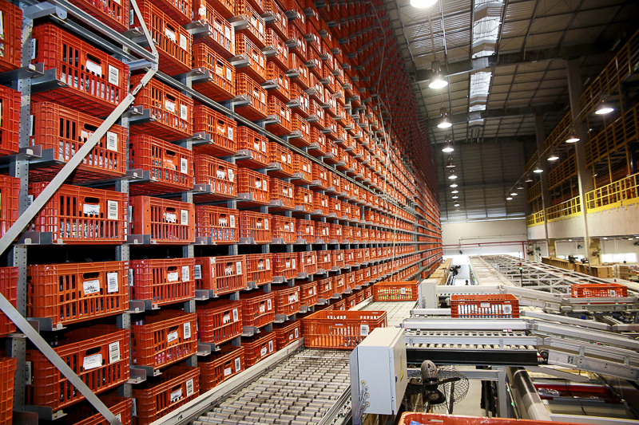

Nascemos da necessecidade de poupar tempo, fazendo a tarefa cansativa de ir ao mercado um momento que pode ser aproveitado de diversas outras forma, seja com
a família ou em outros lazeres.
Pratcidade, agilidade e qualidade são nossos maiores compromissos.
Com estrutura de estocagem e atendimento automatizado, o grupo Facin Supermercado é pioneiro no setor alimentício com a primeira expedição robotizada da América
Latina. Com isso, o processo de estocagem, separação e expedição ganhou mais segurança, agilidade e capacidade
de estoque vertical, ocupando menos espaço físico e dando maior capacidade de tráfego para as caixas de armazenamento.

Alem de estarmos buscando sempre reduzir o tempo entre finalizar o pedido e ele chegar no conforto de sua casa, temos o conpromisso de disponibilizar produtos de
qualidade, onde ontemos grande cuidado com nosso setor de organicos, para garantir que nossos clientes tenham a sensação que suas frutas e legumas vieram direto
do produtor rual.